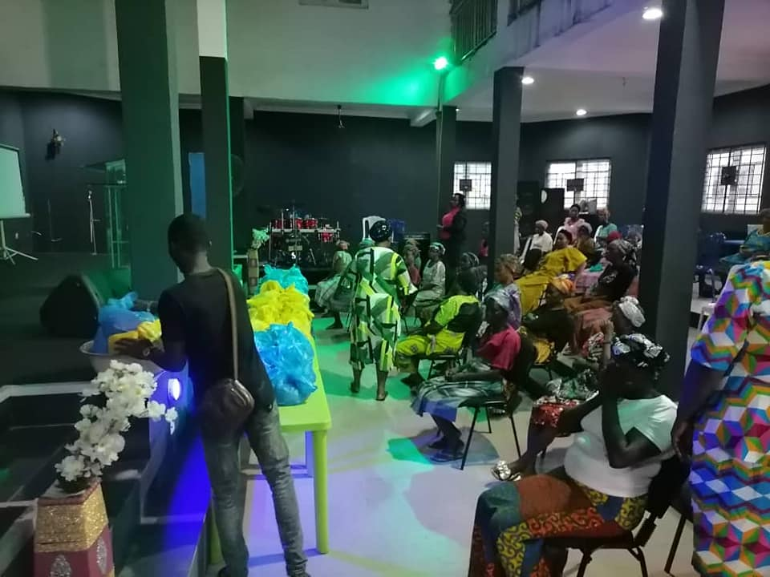
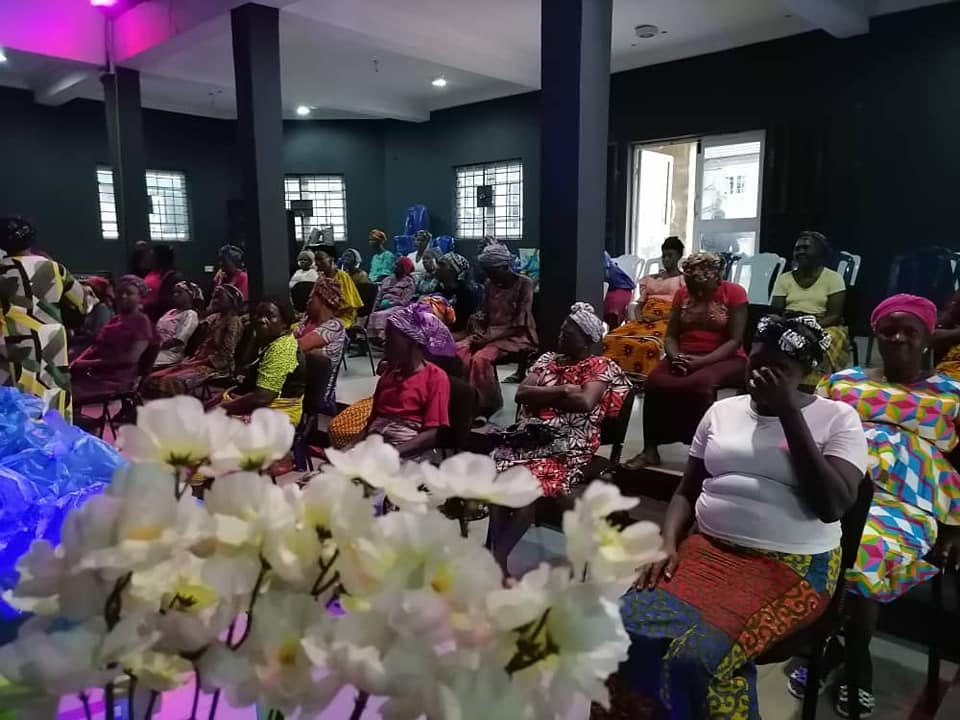
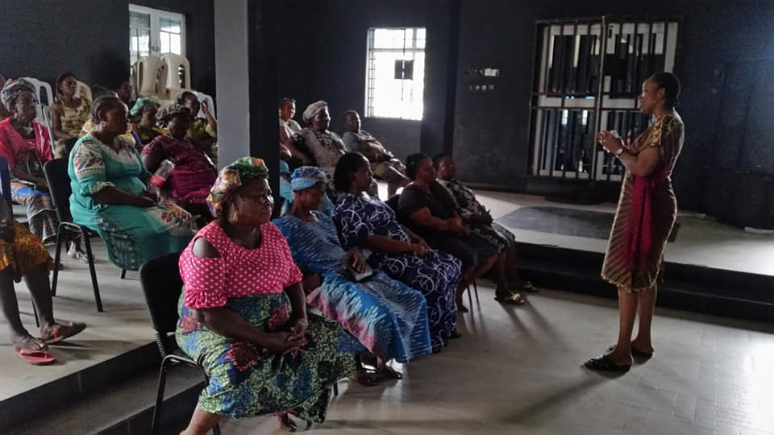
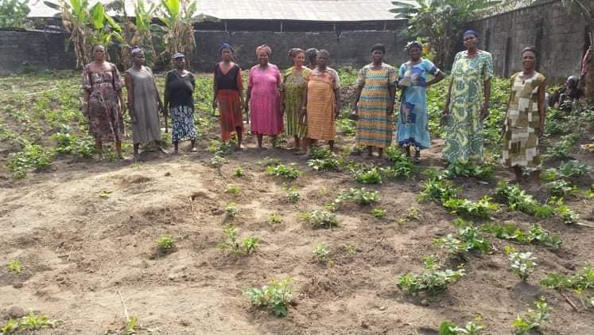
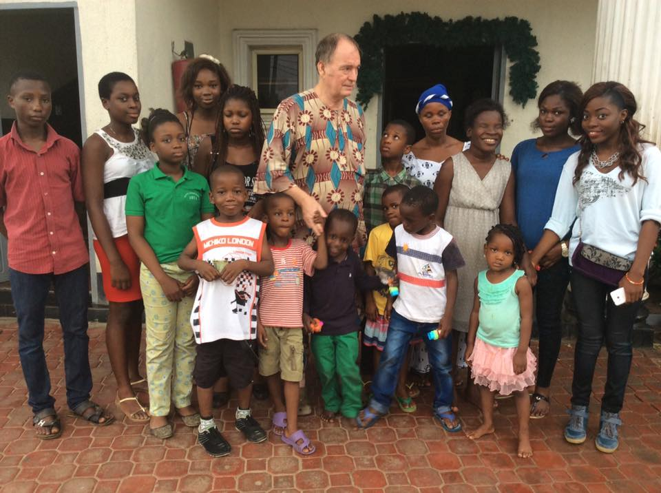
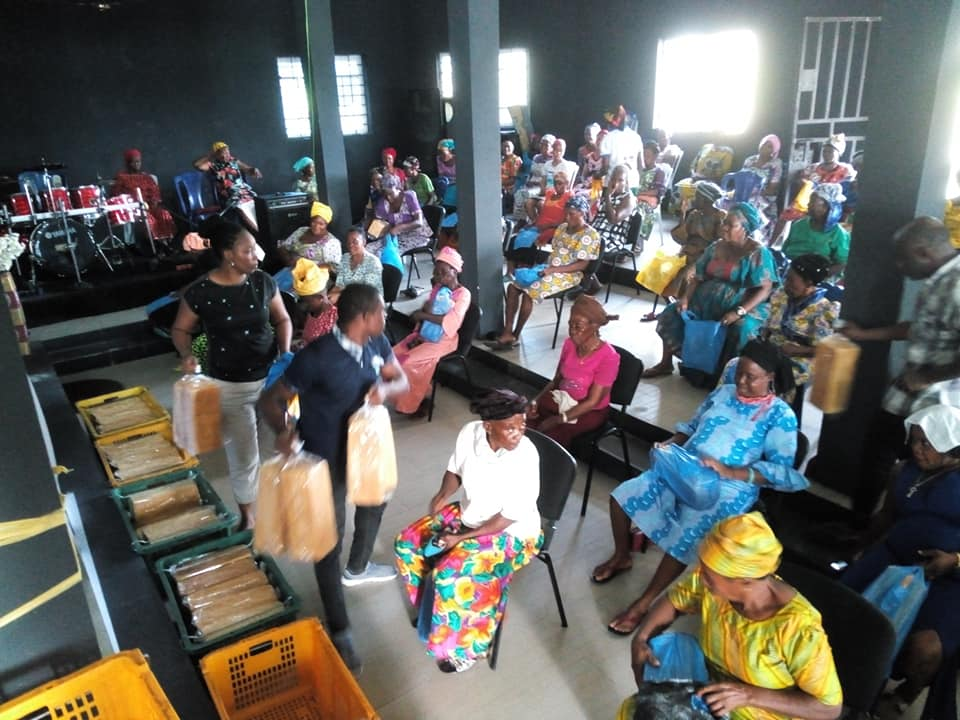
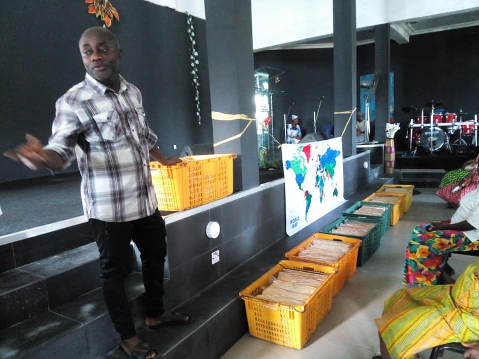
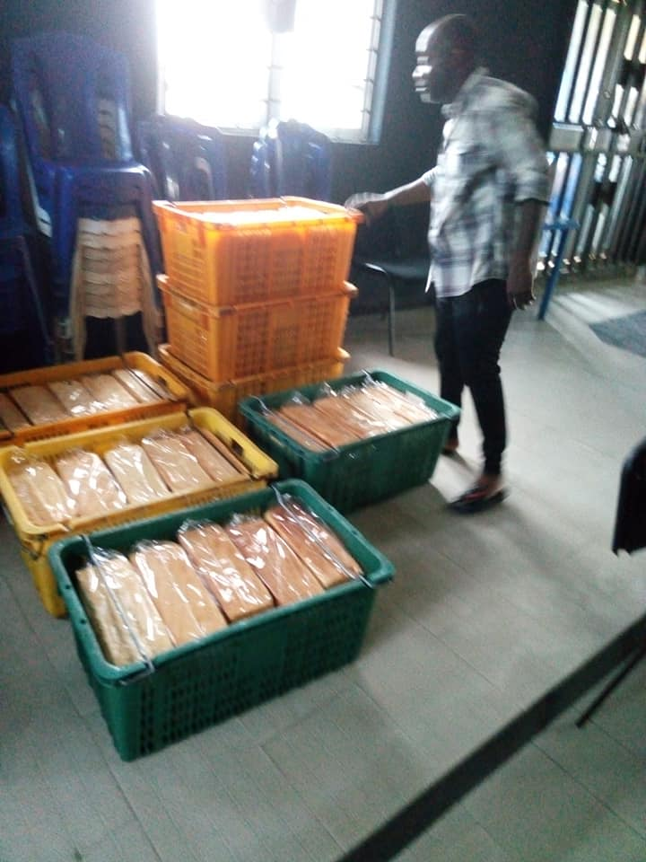

❮
❯
CHURCH ARM:
The Church arm is focused on how to help people get back to
God through His Son Jesus Christ. This
is achieved through
evangelism, follow up and effective discipleship. We also
achieve this through
weekly fellowships and bi-monthly programs
and yearly conventions. We bring people in and teach
them
God’s word, the Bible. The people are brought face to face with
divine instructions that will
help them take personal decisions.
OUTREACH ARM
The outreach arm is focusing on reaching out to the
Widows, Orphans, poor and distressed people in
the society
and the youths and unemployed.
We pray and plan on how to
effectively reach out to this vulnerable people in our society
by
collaborating and partnering with well-meaning and well
spirited people and organisations. We want
to see how people
and trained and empowered to create wealth and be self sufficient.
This collaboration and partnership has been producing positive
results over these years as we have
seen our partners and sponsors
helping us to do regular free Widows and Orphans projects like:
1. Food Distribution
2. Cloth Distribution
3. Toys Distribution
4. Medical Outreaches
Also we have embarked on major empowerment projects like:
1. Widows Farm Projects
2. Widows and Young people business startups
3. Wolfgang, Sven and Team Winspiration Skills Acquisition Centre.
Here Widows, children of
Widows and other members of the
public freely enrol for trainings to enable them acquire
skills in
Catering and Fashion Designing. This is currently on going.
We will expand into other
areas as more partners join us and
more money is made available to enable us get the
equipment
and pay the trainers.
4. Other areas to be open for skills acquisition are: Photo, Video
and Music Studio. Keyboard,
Drum, Guitar and Trumpet and
other musical instrument training. Computer Training, Social
Media Skills training, Furniture and Carpentry training, Bead
and weaving training,
5. Small and Medium Enterprise training